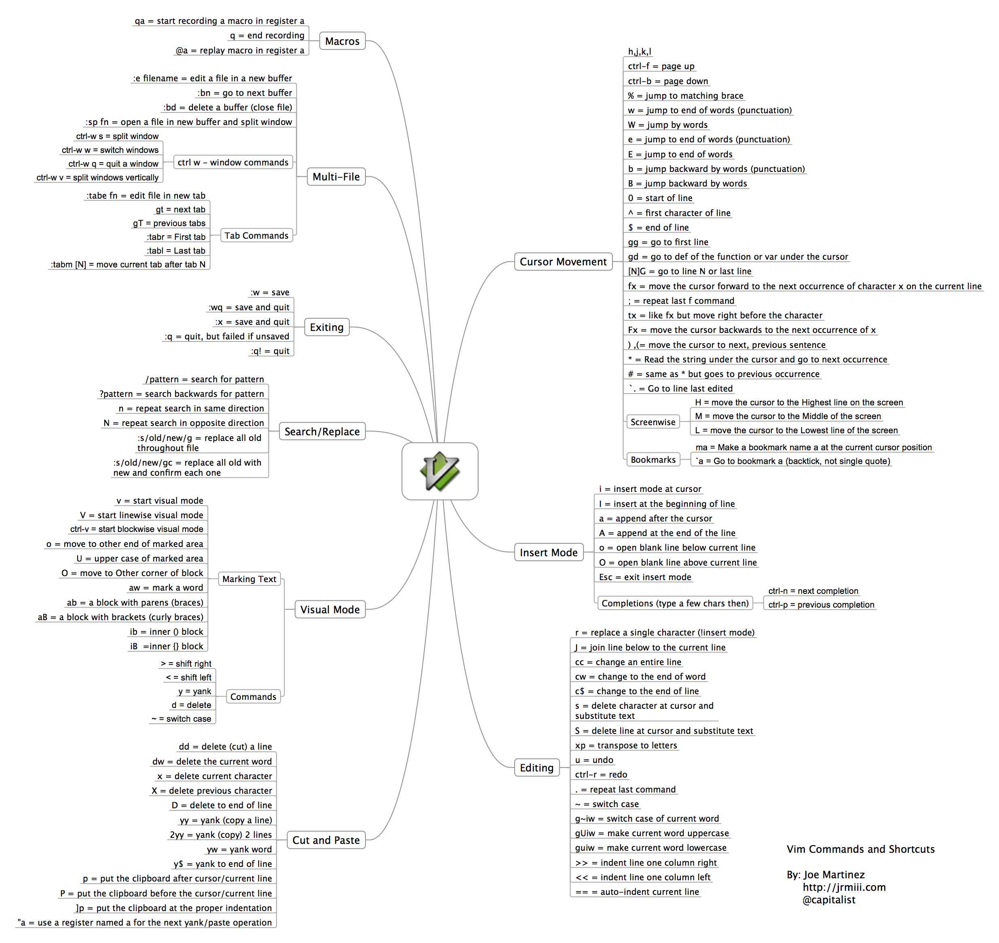

www.css3.io
关于我
简历
工具栈
Linux
linux文件权限
user相关
如何使用yum安装最新软件包
Shell
命令行快捷键
Shell中 2>&1理解
VIM
undo持久化
git
回滚revert和reset区别
3图带你理解rebase和merge
开始实践
v8引擎helloworld
php+hhvm
gitbook生成静态blog通过travis发布到github托管
通过travis部署代码到远程服务器
前端基础
http缓存
bigpipe实现理论背景篇
bigpipe-php+nginx实战篇
如何排查bug
h5适配
GET请求与POST的秘密
如何理解css的BFC抽象概念
javascript继承的演变
javascript简单算法
Rect服务端渲染
commonjs vs commonjs2
Published with GitBook
VIM
